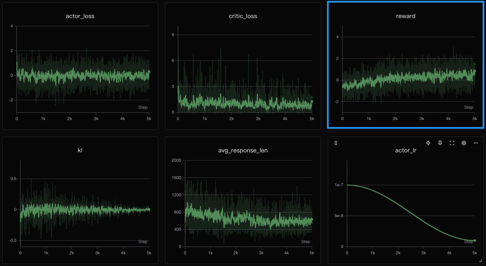
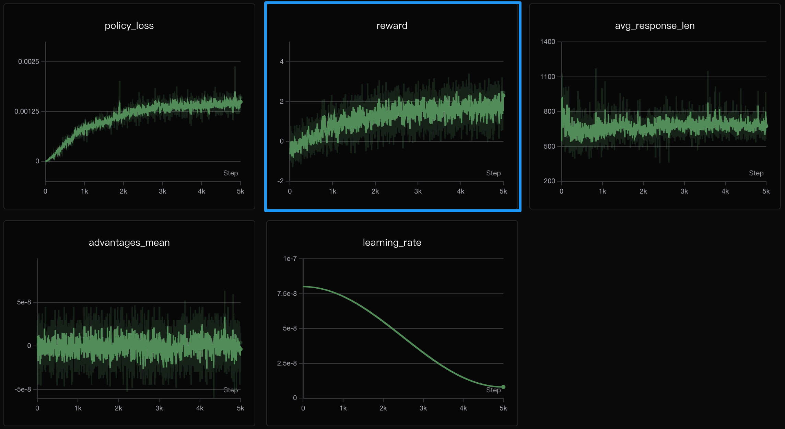
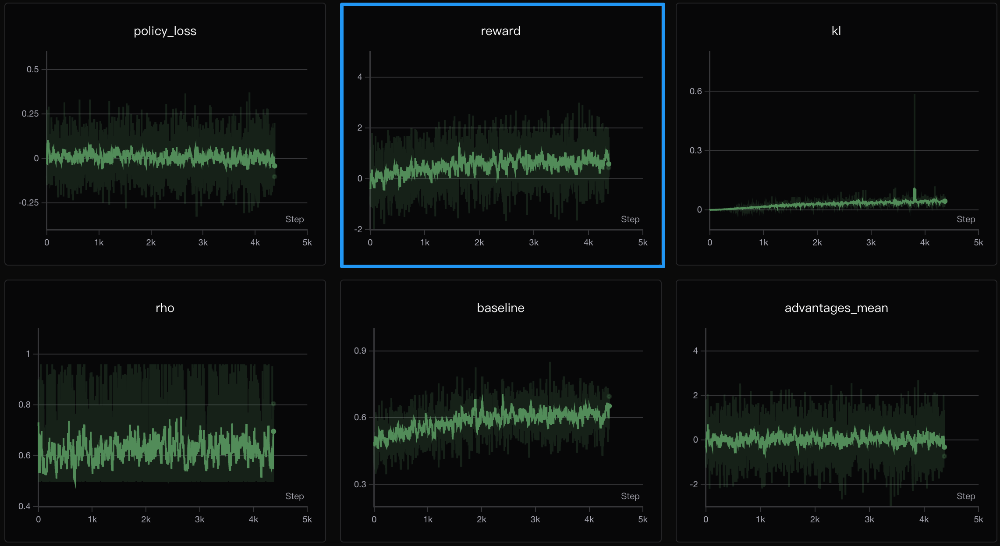

1. 简介
在 LLM 的训练过程中，强化学习后训练（Post-training）是至关重要的一步。它让模型从单纯的“词语接龙”学会如何更好地符合人类的价值观和偏好。
RLHF vs RLAIF
| 类型 | 全称 | 裁判 | 优点 | 缺点 |
|---|---|---|---|---|
| RLHF | Reinforcement Learning from Human Feedback | 人类 | 更贴近真实人类偏好 | 成本高、效率低 |
| RLAIF | Reinforcement Learning from AI Feedback | AI模型 / 规则 | 自动化、可扩展性强 | 可能偏离人类真实偏好 |
二者本质上是一样的，都是通过强化学习的方式，利用某种形式的“反馈”来优化模型的行为。
2. PO 算法的统一视角
所有 Policy Optimization (PO) 算法的本质都只是在优化一个期望：
$$ \mathcal{J}_{PO} = \mathbb{E}_{q \sim P(Q), o \sim \pi(O|q)} \left[ \underbrace{f(r_t)}_{\text{策略项}} \cdot \underbrace{g(A_t)}_{\text{优势项}} - \underbrace{h(\text{KL}_t)}_{\text{正则项}} \right] $$
训练时，只需最小化负目标函数，即: \( \mathcal{L_{PO}}=-\mathcal{J_{PO}} \)
- 策略项 \( f(r_t) \): 如何使用概率比 \( r_t \)? 衡量新旧策略偏差。
- 优势项 \( g(A_t) \): 如何计算优势 \( A_t \)? 衡量动作的好坏。
- 正则项 \( h(\text{KL}_t) \): 如何约束变化幅度 \( \text{KL}_t \)? 防止策略跑偏。
3. 算法详解
Direct Preference Optimization (DPO)
DPO 直接优化偏好对的对数似然，无需显式的 Reward Model。它通过最大化“chosen 优于 rejected”的对数几率来训练。
$$ \mathcal{L}_{DPO} = -\mathbb{E}\left[\log \sigma\left(\beta \left[\log \frac{\pi_\theta(y_w|x)}{\pi_{ref}(y_w|x)} - \log \frac{\pi_\theta(y_l|x)}{\pi_{ref}(y_l|x)}\right]\right)\right] $$
核心代码实现 (train_dpo.py)
def dpo_loss(ref_log_probs, policy_log_probs, mask, beta):
# ref_log_probs 和 policy_log_probs 都是 shape: (batch_size, seq_len)
seq_lengths = mask.sum(dim=1, keepdim=True).clamp_min(1e-8)
ref_log_probs = (ref_log_probs * mask).sum(dim=1) / seq_lengths.squeeze()
policy_log_probs = (policy_log_probs * mask).sum(dim=1) / seq_lengths.squeeze()
# 将 chosen 和 rejected 数据分开
batch_size = ref_log_probs.shape[0]
chosen_ref_log_probs = ref_log_probs[:batch_size // 2]
reject_ref_log_probs = ref_log_probs[batch_size // 2:]
chosen_policy_log_probs = policy_log_probs[:batch_size // 2]
reject_policy_log_probs = policy_log_probs[batch_size // 2:]
pi_logratios = chosen_policy_log_probs - reject_policy_log_probs
ref_logratios = chosen_ref_log_probs - reject_ref_log_probs
logits = pi_logratios - ref_logratios
loss = -F.logsigmoid(beta * logits)
return loss.mean()
Proximal Policy Optimization (PPO)
PPO 是经典的 On-Policy 算法，使用 Actor-Critic 架构。它通过裁剪概率比来防止策略更新过激。
$$ \mathcal{L}_{PPO} = -\mathbb{E}\left[\min(r_t \cdot A_t, \text{clip}(r_t, 1-\varepsilon, 1+\varepsilon) \cdot A_t)\right] + \beta \cdot \mathbb{E}[\text{KL}] $$
训练曲线 (512 dim)

核心代码实现 (train_ppo.py)
# 计算概率比 ratio
ratio = torch.exp(actor_logp - old_logp) # [B]
# 计算 surrogate loss
surr1 = ratio * advantages # [B]
surr2 = torch.clamp(ratio, 1.0 - args.clip_epsilon, 1.0 + args.clip_epsilon) * advantages # [B]
policy_loss = -torch.min(surr1, surr2).mean() # scalar
# 计算 value loss
value_loss = F.mse_loss(values, rewards) # scalar
# 总 loss
loss = policy_loss + args.vf_coef * value_loss + args.kl_coef * kl_ref # scalar
Group Relative Policy Optimization (GRPO)
GRPO 通过“分组相对价值估计”消除了 Critic 网络。它对同一个问题生成一组回答，以组内平均奖励作为 Baseline。
$$ \mathcal{L}_{GRPO} = -\mathbb{E}\left[r_t \cdot A_t - \beta \cdot \text{KL}_t\right] $$
训练曲线 (512 dim)

核心代码实现 (train_grpo.py)
# 组内归一化计算优势
grouped_rewards = rewards.view(-1, args.num_generations) # [B, num_gen]
mean_r = grouped_rewards.mean(dim=1).repeat_interleave(args.num_generations)
std_r = grouped_rewards.std(dim=1).repeat_interleave(args.num_generations)
advantages = torch.clamp((rewards - mean_r) / (std_r + 1e-4), -10, 10)
advantages = (advantages - advantages.mean()) / (advantages.std() + 1e-8)
# 计算 Loss
per_token_loss = -(torch.exp(per_token_logps - per_token_logps.detach()) * advantages.unsqueeze(1) - args.beta * per_token_kl)
loss = ((per_token_loss * completion_mask).sum(dim=1) / completion_mask.sum(dim=1)).mean()
Single-stream Policy Optimization (SPO)
SPO 旨在解决 GRPO 的“退化组”问题。它使用自适应的 Value Tracker 来提供跨 Batch 的稳定 Baseline，无需分组采样。
$$ \mathcal{L}_{SPO} = -\mathbb{E}\left[\log \pi_\theta(a_t|s) \cdot A_t - \beta \cdot \text{KL}_t\right] $$
训练曲线 (768 dim)

核心代码实现 (train_spo.py)
# 自适应 Baseline
baselines = value_tracker.get_baselines(len(prompts)).to(args.device)
# 计算优势
advantages = rewards - unnormalized_baselines
advantages = advantages.clamp(-5.0, 5.0)
# 计算 Loss
per_token_loss = -per_token_logps * advantages.unsqueeze(1) + args.beta * per_token_kl
loss = ((per_token_loss * completion_mask).sum(dim=1) / completion_mask.sum(dim=1)).mean()
# 更新 Value Tracker
rho = value_tracker.update(rewards, per_token_logps.detach(), response_masks)
4. 算法总结
| 算法 | 策略项 \( f(r_t) \) | 优势项 \( g(A_t) \) | 正则项 \( h(\text{KL}_t) \) | 优化模型数 |
|---|---|---|---|---|
| DPO | \( \log r_w - \log r_l \) | 隐式（偏好对比） | 隐含在 \( \beta \) 中 | 2 |
| PPO | \( \min(r, \text{clip}(r)) \) | \( R - V(s) \) | \( \beta \cdot \mathbb{E}[\text{KL}] \) | 4 |
| GRPO | \( r \) | \( \frac{R - \mu}{\sigma} \) | \( \beta \cdot \text{KL}_t \) | 2 |
| SPO | \( \log \pi_\theta \) | \( R - B_t^{adaptive} \) | \( \beta \cdot \text{KL}_t \) | 2 |